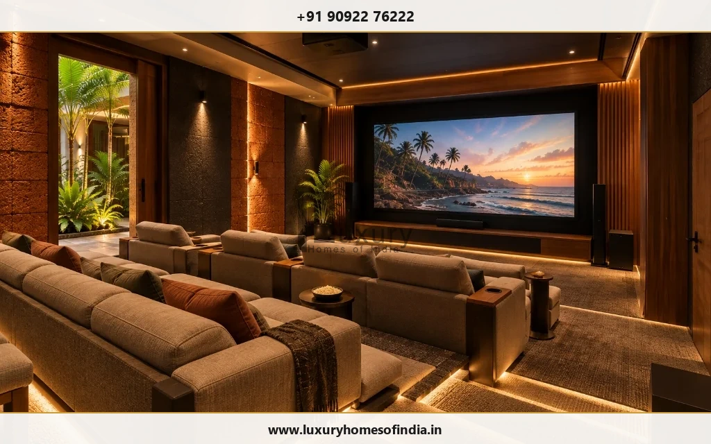
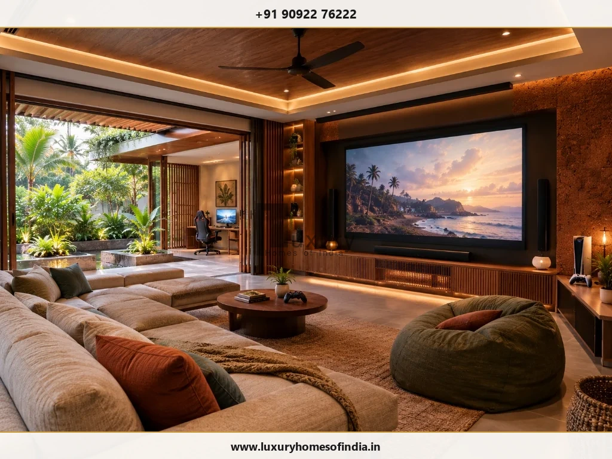
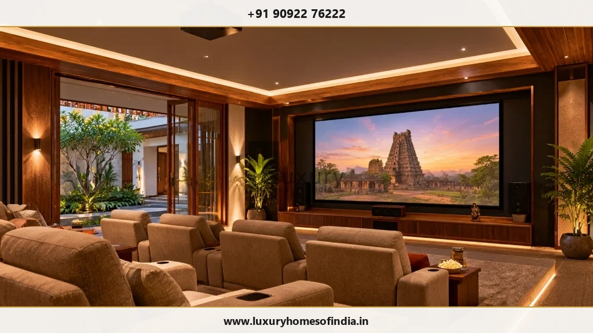
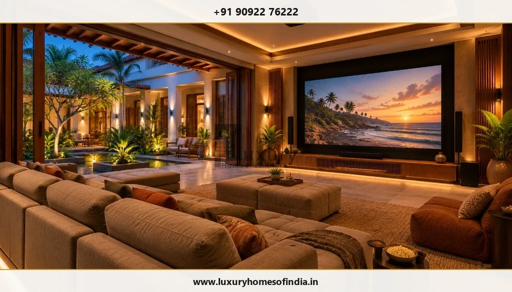

Luxury Home Theatre in Chennai
Create a space where the experience takes centre stage.
Key Takeaways: Home Theatre Planning
- Spatial Architecture First: Successful private cinema design begins with room proportions, sightlines, and structural integration during architectural planning—not after selecting hardware.
- Acoustic Isolation vs. Room Treatment: Sound isolation (preventing audio leakage into adjoining bedrooms) requires structural decoupling, whereas internal acoustic panels manage speech clarity inside the space.
- Chennai Climate & HVAC Engineering: Enclosed cinema rooms generate significant electronic heat. Low-velocity ducted cooling with decoupled air ducts is essential to prevent noise during quiet movie scenes.
- Dedicated vs. Multipurpose Layouts: Dedicated theatres prioritize tiered cinema recliners and blackout controls, while multi-purpose suites balance ambient lighting, gaming zones, and flexible seating.
- Scope & Responsibilities: Avoid hidden project gaps by establishing clear boundaries between interior joinery, electrical rough-ins, acoustic engineering, and AV hardware integration upfront.
A home theatre should feel comfortable long before the film begins. The seating, screen elevation, acoustic response, architectural lighting, and ambient room layout must function as a synchronized ecosystem. Attractive interior joinery alone cannot deliver an immersive cinematic experience, and premium audiophile equipment will fall short without a properly proportioned and treated room.
If you are planning a luxury home theatre in Chennai, incorporate your entertainment requirements into your broader luxury home planning brief at the initial architectural stage. At Luxury Homes of India, we coordinate how your proposed cinema space relates to your architectural floor plan, structural slabs, and interior design. Specialist audiovisual, acoustic engineering, and specialist installations are developed alongside qualified partners with clearly defined scope responsibilities.

Dedicated cinema room or flexible entertainment space?
The first fundamental decision in residential theatre planning is defining how your family intends to utilize the room:
A Dedicated Home Theatre
A space designed primarily for cinematic viewing is built around precise viewing geometry, immersive surround sound (such as Dolby Atmos), total light elimination, and fixed multi-tier seating. Its location within the home, structural room ratios (avoiding square rooms that induce acoustic standing waves), and acoustic separation from quiet zones like bedrooms deserve meticulous attention during early floor plan development.
A Multipurpose Entertainment Room
If the space must accommodate console gaming, live sports broadcasts, casual music listening, or family social gatherings, spatial flexibility becomes paramount. In these environments, adaptable modular seating, hidden motorized screens or ultra-short-throw projectors, daylight management, and integrated storage allow the room to transition effortlessly from movie night to daily recreation.
Neither approach is universally superior; the optimal solution responds directly to your family's lifestyle, available floor area, and personal entertainment priorities.

Plan the room before choosing the system
Designing a luxury theatre involves far more than mounting a screen on a feature wall. Your initial architectural brief should define key spatial parameters:
- Target Capacity: Expected number of simultaneous viewers for typical and peak occasions.
- Seating Geometry: Preference for custom leather cinema recliners, deep sectional sofas, or tiered riser platforms.
- Media Content: Balance between high-dynamic-range cinema, interactive gaming, surround music, or streaming sports.
- Room Dimensions & Shell: Ceiling clear height (essential for riser platforms and overhead speakers) and wall boundary construction.
- Daylight & Glare Control: Window locations, motorized blackout drapery, and architectural light traps.
- Sound Isolation: Physical proximity to bedrooms, quiet study spaces, or external traffic noise.
- Services Access: Dedicated equipment racks, cable conduits, network switches, and ventilation clearance.
While design reference images set an inspiring aesthetic direction, all technical decisions must respond to the physical realities of your actual room.

Seating and viewing comfort
Display screen dimensions and seating positions must be engineered together. Viewing distances and vertical sightlines should be reviewed with your AV specialist to adhere to SMPTE and THX guidelines (typically recommending a 36° to 45° field of view for cinema immersion).
When incorporating multiple seating rows:
- Calculate riser heights (typically 12 to 14 inches per row) so rear viewers maintain an unobstructed sightline over front headrests.
- Ensure generous perimeter circulation corridors (minimum 36 inches wide) for safe movement in darkened conditions.
- Coordinate door swing radii to prevent obstruction of walkways or seating risers.
- Integrate low-voltage step illumination along riser edges to enhance safety without spilling ambient light onto the projection screen.
Audio and acoustics are different requirements
An audio system generates acoustic energy; the physical room determines how that energy is experienced. A common point of confusion is conflating internal acoustic treatment with structural sound isolation:
- Internal Acoustic Treatment: Manages sound behavior inside the room. Absorptive fabric panels, corner bass traps, and sound diffusers eliminate flutter echoes, balance room reverberation time (RT60), and enhance speech intelligibility.
- Sound Isolation (Soundproofing): Prevents acoustic energy from escaping into adjoining rooms or external sound from entering the cinema. This requires structural mass, decoupled double-stud walls, floating acoustic floors, and heavy acoustic seals on doors.
A decorative wall panel should never be mischaracterized as soundproofing. Structural isolation requires early coordination with your structural engineering team to accommodate added slab dead loads from dense masonry or floating concrete sub-floors.

Interiors that support the experience
Luxury theatre interiors should combine refined visual sophistication with strict technical functionality. Decorative elements should enhance—rather than distract from—the screen presentation.
| Interior Element | Key Design & Technical Reviews |
|---|---|
| Wall Finishes | Select non-reflective matte fabrics, dark timber louvers, or acoustic wall coverings that prevent light bounce while concealing acoustic absorption panels. |
| Flooring & Carpeting | Dense velvet pile or wool carpeting over high-density acoustic underlayment reduces footfall noise and dampens floor reflections. |
| Ceiling Architecture | Incorporate dark coffer details or acoustic plaster ceilings that accommodate recessed Dolby Atmos height speakers, projectors, and HVAC diffusers. |
| Cinema Seating | Verify ergonomic recline dimensions, motor power requirements, cup holder illumination controls, and leather breathability for tropical climates. |
| Custom Joinery | Ensure AV equipment racks feature active thermal ventilation, removable rear service panels, and concealed cable management channels. |
| Doors & Openings | Specify solid-core acoustic doors with drop-down automatic bottom seals and magnetic perimeter gaskets to prevent sound leakage. |
Lighting that works before, during and after viewing
Theatre lighting must accommodate several distinct functional scenarios: entering the room, settling into seats, general maintenance/cleaning, and active cinema viewing. A well-designed lighting scheme uses scene-based control to transition smoothly between these modes.
Key lighting design parameters:
- Zero Screen Spill: Downlights and wall sconces must be positioned so direct light rays never hit the projection screen or display panel.
- Zones & Dimmers: Separate circuits for step lighting, perimeter cove lighting, sconces, and overhead cleaning lights.
- Dark Aesthetics: Use deep-recessed architectural fixtures with dark baffles to eliminate glare when lights are dimmed.
- Maintenance Access: Ensure ceiling lighting drivers and transformers remain accessible via concealed access hatches.

Keep equipment accessible
High-end AV amplifiers, media servers, power conditioners, and smart home processors generate heat and require occasional maintenance or upgrades. Hiding components inside sealed cabinetry without thermal management or access pathways causes premature equipment failure.
Planning considerations for AV hardware:
- Dedicated pull-out, rotating slide racks inside ventilated joinery or an adjacent equipment closet.
- Generous 2-inch PVC wall conduits for clean HDMI, fiber optic, and speaker cable runs.
- Clean, isolated electrical power circuits with surge protection and UPS battery backup to protect sensitive electronics during power transitions.
Cooling and ventilation need coordination in Chennai
Chennai’s warm, humid coastal climate presents unique challenges for enclosed cinema rooms. High occupant counts combined with thermal heat from projectors and amplifiers demand robust air conditioning. However, standard high-velocity AC wall units create unacceptable background noise (NC level) that ruins whisper-quiet cinematic dialogue.
HVAC planning for luxury home theatres:
- Low-Velocity Ducted Air Conditioning: Use oversized ductwork and linear slot diffusers designed to operate below NC-25 noise ratings.
- Acoustic Baffles & Silencers: Install acoustic duct silencers to prevent AC ducts from acting as sound bridges between the theatre and adjoining rooms.
- Humidity Control: Ensure constant moisture control to protect delicate speaker cones, acoustic wall fabrics, and leather upholstery from tropical mold.
Define the scope before comparing quotations
A "turnkey home theatre" proposal can vary wildly between vendors. To compare proposals accurately, ensure the division of responsibilities is clearly documented across all specialist trades:
| Scope Category | Primary Deliverables & Responsibilities |
|---|---|
| Architectural & Spatial Layout | Room dimensions, riser heights, door/window locations, structural slab load verification. |
| Acoustic Engineering | Internal reverberation design, wall isolation assemblies, acoustic door specifications. |
| Interior Architecture | Wall panelling, ceiling joinery, carpet installation, decorative lighting integration. |
| Audiovisual Hardware | Projector, screen, AV receiver/processor, speakers, subwoofers, source components. |
| Seating & Furniture | Custom cinema recliners, upholstery selection, motor power connections. |
| MEP & HVAC Provisions | Dedicated electrical circuits, lighting control modules, ducted silent AC, conduit runs. |
| Calibration & Support | ISF video calibration, audio room correction (DSP), user training, and ongoing warranty support. |
New home or existing room adaptation?
Planning a New Home
Incorporating a theatre during new villa design offers total freedom. Room ratios, slab heights, structural mass, concealed conduit pathways, and specialized HVAC can be engineered from the ground up alongside your CMDA planning permission process.
Adapting an Existing Room
Converting an existing bedroom or lounge requires an upfront feasibility audit. Ceiling clear heights, existing wall construction, electrical panel load capacity, and adjacent room noise sensitivity will dictate what level of cinema experience can be achieved.
Frequently Asked Questions
Let's plan the complete viewing experience
Bring your ideas and tell us how your family wants to enjoy entertainment. Speak with Luxury Homes of India to integrate a high-performance home theatre space into your residential project.